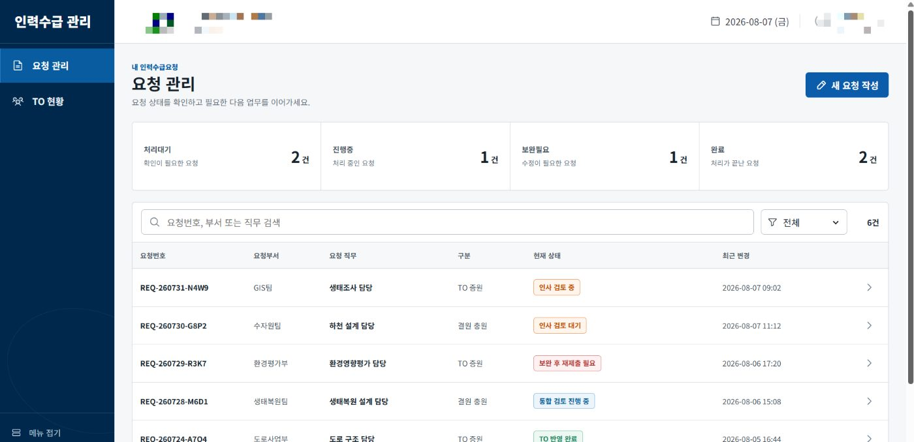
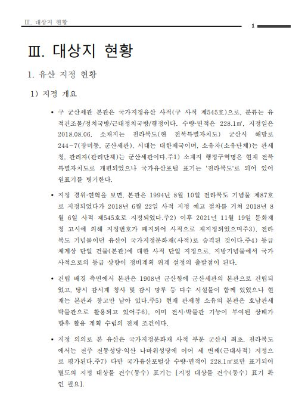
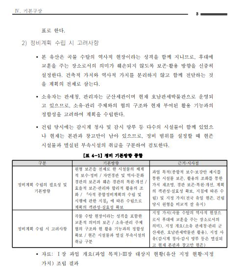
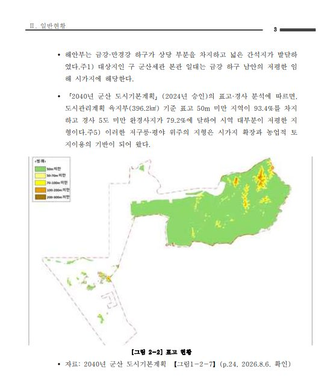
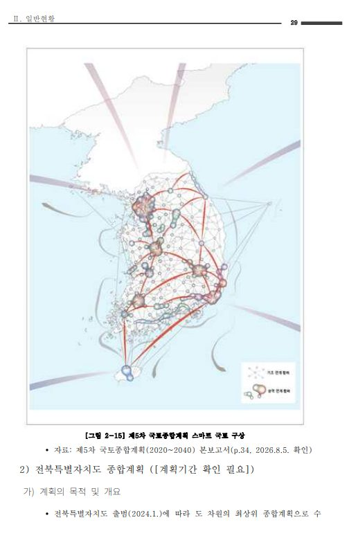
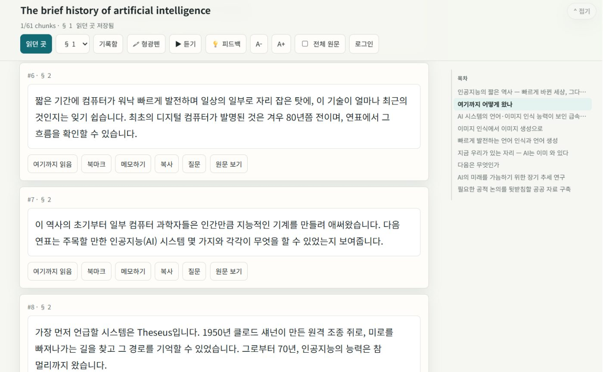

공공 분야 6년의 실무 경험으로 조직이 일하는 방식을 이해하고, AI 에이전트(Claude Code · Codex)와 노코드·로우코드, 스크립트, AI API를 결합해 실제로 돌아가는 자동화 시스템을 만듭니다. 현재는 엔지니어링 기업에서 업무 흐름 분석부터 PoC, 사내 웹서비스 구현까지 AI 전환 전 과정을 담당하고 있습니다.
24+
자동화·AI 프로젝트 (2024~)
3
운영 중인 사내 AI 웹서비스
3
자동화 교육 콘텐츠 제작·운영
6Y
공공 분야 실무 경력
{{ s }}
02 — WORK
만들고 있는 것
회사에서는 업무 흐름 분석 → n8n PoC → 웹서비스 구현의 3단계로 AI 전환을 진행하고, 개인적으로는 읽고 배우는 도구를 만듭니다.
HR DIGITALIZATION

W1
인력수급 전산화
COMPANY
인력수급 요청부터 5단계 결재 흐름(인사 접수 → 재무 검토 → 수주/입찰 검토 → 최종 판단 → 결재본·TO 반영), 처리이력 추적까지 한 흐름으로 처리하는 대시보드. 요청서 공식 PDF 출력 지원.
REPORT DRAFT — AI GENERATED




W2
보고서 초안 생성 도구
COMPANY
IN PROGRESS
엔지니어링 보고서 작성 전 과정을 돕는 도구. 위는 AI가 생성한 정비계획 보고서 초안 — 본문·표·지도·계획 도판까지 자동 구성됩니다. 생성 모듈은 한 번에 100페이지 분량 생성, 완납본 기준 품질을 목표로 개선 중입니다.
EVERYREAD

W3
EveryRead — 독서 웹앱
PERSONAL
영어 원서를 한국어로 읽고 듣는 바이링궐 리더. 기기 간 읽던 위치·형광펜·메모 동기화, 카드별 AI 낭독(TTS), AI 질문 기능.